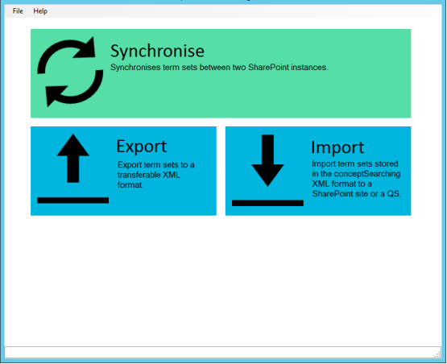
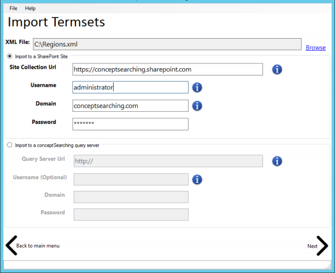
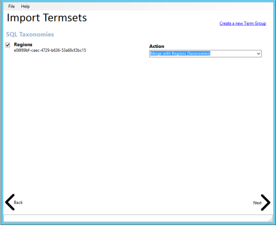
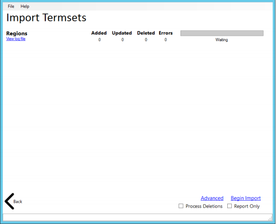

Import a term set structure from an XML file via the conceptTermStoreManager using the steps
listed in this article
Imported term sets will now be available!
- Navigate to C:\inetpub\wwwroot\conceptQS\bin\conceptTermStoreManager.exe
-
Run the conceptTermStoreManager.exe and observe the following screen
- 
- Click the Import button to import a term set structure from an XML file
-
Enter the location of the XML file and the destination term store
- 
- This example uses an Office 365 destination
- Click Next
- Check the boxes of the term sets you wish to import
-
For each term set, use the drop down list to select a desired Action
- 
- In this example, the Regions term set will be merged with the existing term set in the Taxonomies term group
- Click Next
-
Review the summary on the final page
- 
- If you wish to ensure terms not found in the source are removed from the destination (Matching GUID), check the Process Deletions box
- If you wish to prevent any changes from occurring in the destination, check the Report Only box
- Any changes that would have been made to term sets will be logged to the individual term sets logs, which are visible by clicking the View Log File link.
- Optional advanced options can be found by clicking the Advanced button.
- Click Begin Import
Imported term sets will now be available!